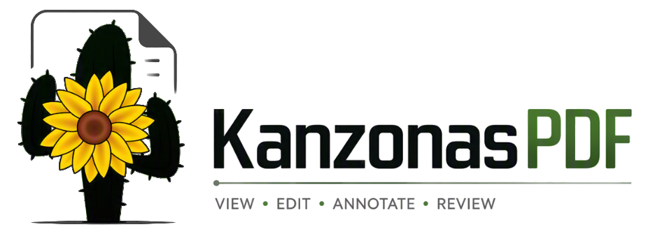
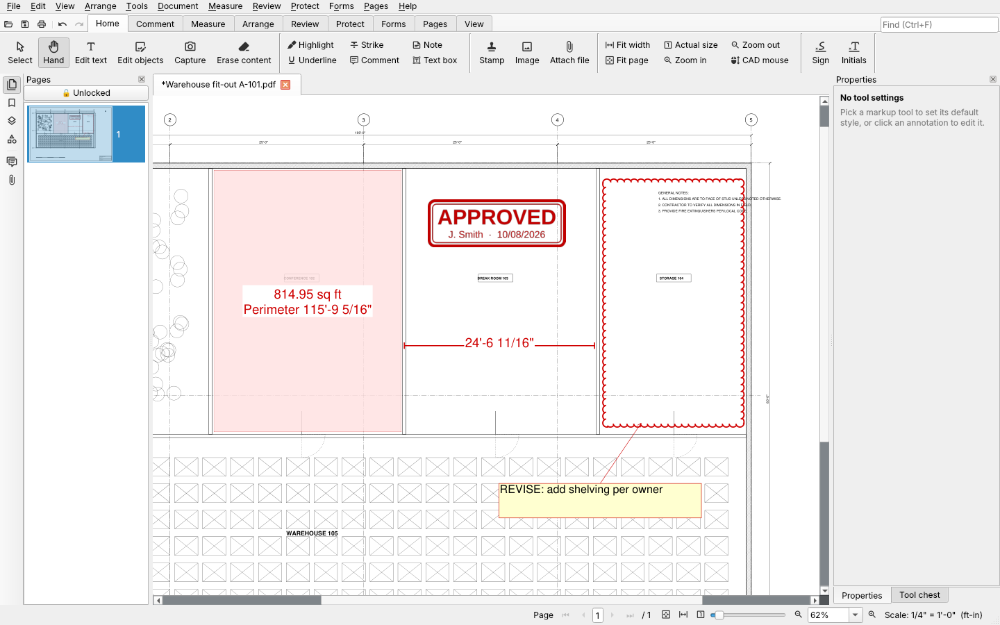
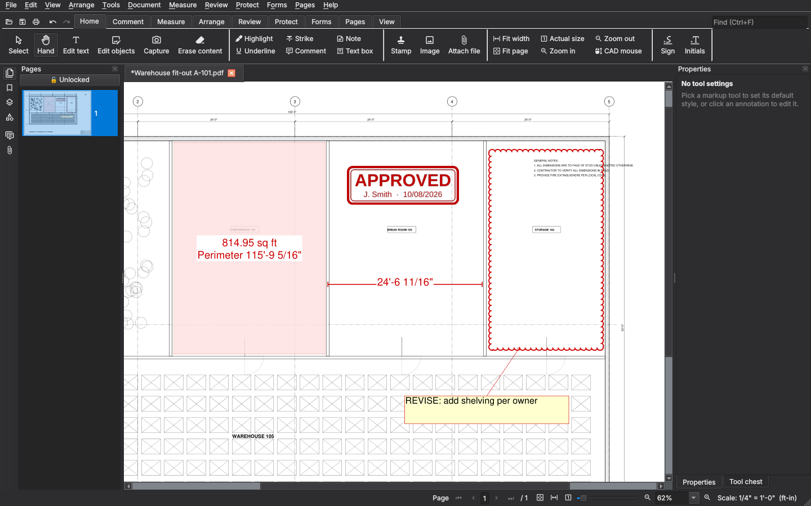

Free PDF markup, measuring and editing
For people who mark up and measure drawings and plans: estimators, engineers, architects and reviewers. Open source, no account, no telemetry, no watermarks.
Newest version from GitHub releases
Linux (AppImage) · Portable for Windows (zip) · macOS · All releases · Source code on GitHub

What it does
Measure
Calibrated length, area, perimeter, volume, count, angle and radius. Scales read from title blocks.
Mark up and review
Highlights, comments, callouts, shapes, revision clouds, stamps with your name and the date, and a tool chest.
Compare revisions
Word by word, or laid over each other, with the changes clouded for you.
Edit the PDF itself
Change the page's own text (paragraphs rewrap), pictures and shapes. Add links to anything.
Forms, signatures, redaction
Fillable forms, digital signatures, true redaction and OCR for scanned pages.
Export
To Word, Excel, PowerPoint and AutoCAD DXF.
A free alternative to Bluebeam Revu and Adobe Acrobat
If you need Bluebeam-style calibration, lengths, areas, volumes and revision clouds, or Acrobat-style forms, signatures, redaction and text editing, but not the price, try KanzonasPDF.
| Feature | KanzonasPDF | Bluebeam Revu | Adobe Acrobat Pro | PDF-XChange Editor |
|---|---|---|---|---|
| Price | Free, open source (AGPL) | Annual subscription | Subscription, or a 3-year license (Acrobat Pro 2024) | Free (its paid features add watermarks), or a license |
| Calibrated measuring (length, area, volume, count) | Yes | Yes | Basic (length, perimeter, area) | Length, perimeter, area |
| Compare revisions (clouds the changes) | Yes | Yes | Compares, marks changes with highlights | Compares (Editor Plus or PRO license) |
| Edit page text and objects | Yes (paragraphs rewrap) | Limited (small changes; text doesn't wrap) | Yes | Yes |
| Portable (USB stick, nothing in the registry) | Yes | No | No | Yes |
| Runs offline, no account | Yes | Bluebeam ID; online every 30 days | Adobe account; a subscription goes online every 30 days | Yes |
Checked against each vendor's own pages in November 2026. Other products change their prices and features, so check their sites before deciding. Bluebeam Revu, Adobe Acrobat and PDF-XChange Editor are trademarks of their owners.
Sources
- Bluebeam: pricing (annual plans), sign in with a Bluebeam ID, working offline, Edit Text, Compare Documents
- Adobe: Acrobat Pro 2024 term license, Compare Files, internet and the 30-day offline period
- PDF-XChange: licensing and watermarks, Compare Documents, measuring tools, portable version
All of it free, with no watermarks, no account and nothing uploaded. Missing something you rely on in Bluebeam or Acrobat? Tell us: that's how most of KanzonasPDF's features got there.
Light or dark
A light, dark or match-Windows theme, with ribbon or classic toolbars.

Good to know
- Free and open source (AGPL-3.0)
- Windows, and Linux on 64-bit x86 PCs
- Runs offline; nothing is uploaded
- Portable: runs from a USB stick
- Tells you when an update is out
- No macOS version yet